БИОГРАФИЯ П. А. СТОЛЫПИНА
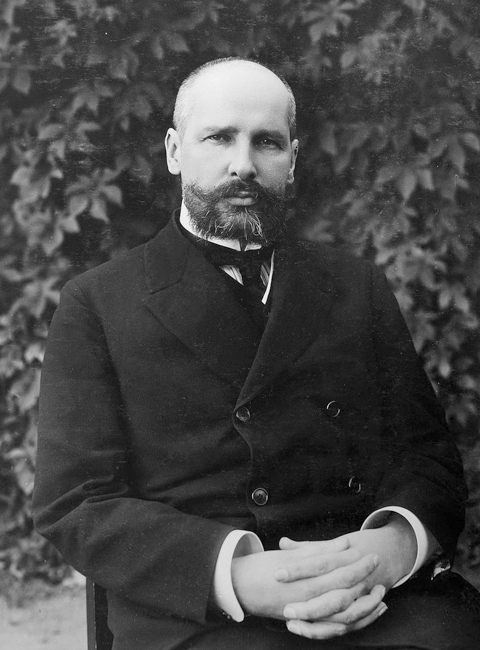
1862 — Рождение и детство
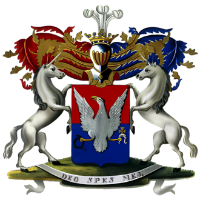
2 апреля 1862 года Пётр Аркадьевич Столыпин родился в Дрездене.
Происхождение: Семья принадлежала к старинному дворянскому роду, имела родственные связи с Горчаковыми, Голицыными, Мордвиновыми, Оболенскими и даже приходилась троюродной роднёй поэту Михаилу Лермонтову.
Отец: Аркадий Дмитриевич Столыпин — генерал, участник Крымской войны.
Мать: Наталья Михайловна Горчакова — представительница княжеского рода Горчаковых.
Детские годы: прошли в подмосковном Середникове и имении Колноберже в Литве.
Первоначальное образование: до 12 лет обучался дома.
1874–1879: учился в Виленской мужской гимназии.
1879–1881: продолжил обучение в Орловской гимназии.
1881 год: окончил гимназию с аттестатом зрелости.
1881–1885 — Университетское образование
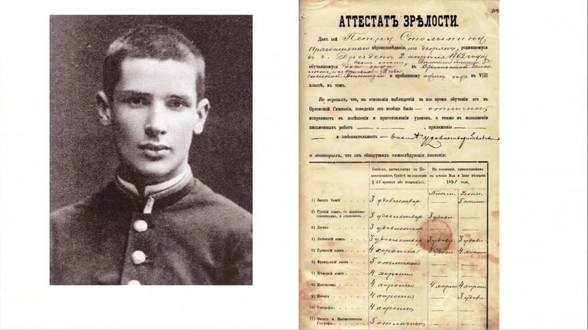
31 августа 1881 года П. А. Столыпин поступил на естественное отделение физико-математического факультета Императорского Санкт-Петербургского университета.
Специальность: изучал агрономию, что впоследствии оказало влияние на его взгляды в области сельского хозяйства и земельной политики.
Преподаватели: среди профессоров университета был выдающийся русский учёный Д. И. Менделеев, принимавший у Столыпина экзамен по химии.
7 октября 1885 года окончил университет и был утверждён кандидатом физико-математического факультета.
Начало карьеры: после окончания обучения получил чин коллежского секретаря (X класс Табели о рангах), что считалось высоким стартом государственной службы.
1889–1902 — Служба в Ковно
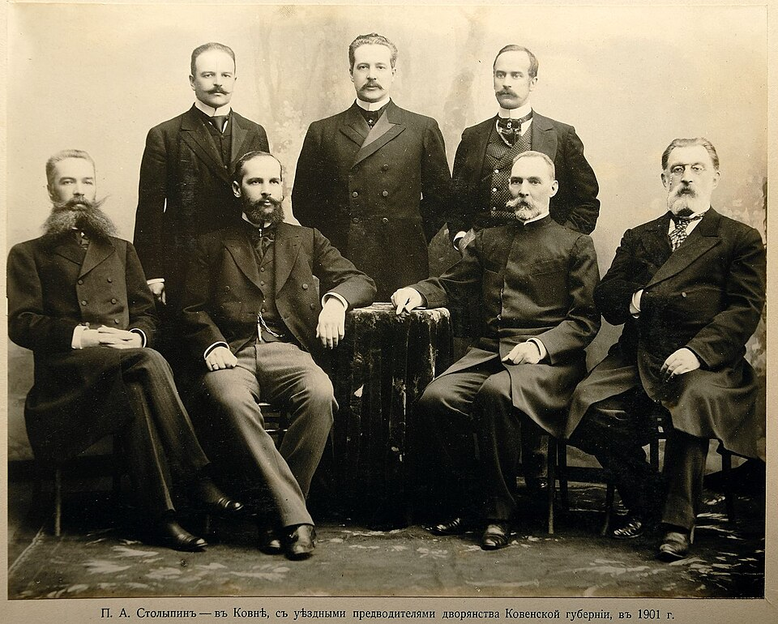
18 марта 1889 года П. А. Столыпин был назначен Ковенским уездным предводителем дворянства и председателем суда мировых посредников.
Период службы: в Ковно он провёл около 13 лет. По воспоминаниям семьи, это было одно из самых спокойных и счастливых времён его жизни.
Основное направление деятельности: особое внимание уделял развитию сельского хозяйства, улучшению положения крестьян и повышению эффективности земледелия.
Инициативы: внедрял новые методы хозяйствования, поддерживал развитие животноводства, участвовал в разрешении земельных споров между крестьянами и помещиками.
Общественная деятельность: содействовал созданию в Ковно «Народного дома» — культурно-просветительского центра для населения.
Продвижение по службе: за успешную деятельность получил ряд наград и чинов, а в 1899 году стал губернским предводителем дворянства.
Значение периода: именно в Ковно сформировались его взгляды на аграрный вопрос, которые позднее легли в основу реформ.
1902–1903 — Гродненская губерния
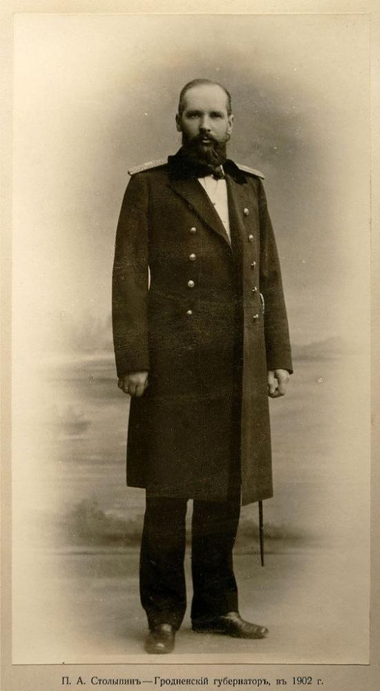
Срок службы: 30 мая 1902 — 15 февраля 1903 года.
Назначение: стал губернатором по инициативе министра внутренних дел В. К. фон Плеве. На тот момент был самым молодым губернатором Российской империи.
Особенности губернии: многонациональный регион (белорусы, поляки, евреи), политическая напряженность (польское население VS имперская власть, евреев ограничивали), экономические проблемы(отставание в развитии, чересполосица земель, низкая урожайность).
Административные меры: подавлял беспорядки, усилил работу полиции, уравнивал постановлениями права жителей независимо от вероисповедания.
Развитие образования: открывал училища, поддерживал гимназии, лично финансировал стипендии для учеников.
Аграрные меры: расселение крестьян на хутора, ликвидация чересполосицы, внедрение новых технологий земледелия.
Значение периода: Гродно стало «лабораторией» будущей аграрной реформы Столыпина.
1903–1906 — Саратовская губерния
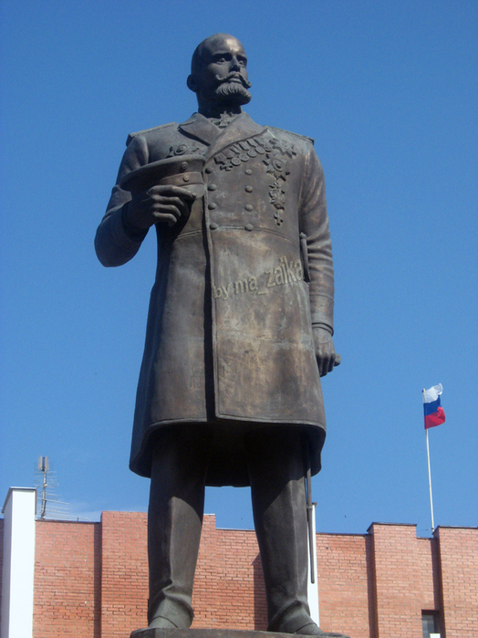
Срок службы: 15 февраля 1903 — 26 апреля 1906 .
Назначение: назначен как «кризисный управленец» для стабилизации губернии; задача — подавить волнения, увеличить хлебные поставки и усилить роль Саратова в регионе.
Основные проблемы: крестьянские волнения, слабое благоустройство, отставание инфраструктуры, рост революционных настроений в 1905 году.
Что сделал: асфальтирование улиц, развитие освещения и телефонной сети, подготовка к запуску электрического трамвая, озеленение города.
Социальные меры: строительство гимназий и училищ, открытие больниц, приютов и ночлежных домов, развитие системы социальной помощи.
Аграрная политика: поездки по губернии во время восстаний, сочетание переговоров и жёстких мер для подавления беспорядков, формирование основ будущей аграрной реформы.
Итоги: стабилизация региона, модернизация Саратова, накопление опыта кризисного управления.
1906–1911 — Министр внутренних дел Российской империи
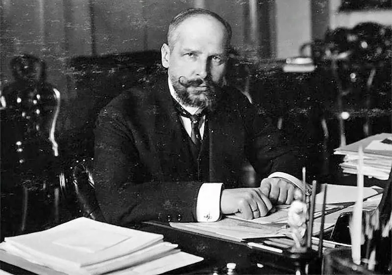
Срок службы: 26 апреля (9 мая) 1906 — 8 июля 1906 (в должности МВД), далее до 1911 года одновременно с постом председателя Совета министров.
Назначение: назначен императором Николаем II на фоне революционных событий 1905–1907 годов; должность считалась одной из самых опасных в империи (угрозы, покушения).
В ведении министра внутренних дел находились: полиция и жандармерия, местная администрация, почта и телеграф, цензура, медицина и ветеринария, земства, продовольственное обеспечение, контроль за конфессиями.
Работа с Думой: выступления в I Государственной думе, жёсткое политическое противостояние; известная фраза: «Не запугаете!» прозвучала в ответ на угрозы и нападки со стороны депутатов левого крыла — она стала символом его несгибаемой позиции.
1906–1911 — Председатель Совета министров Российской империи
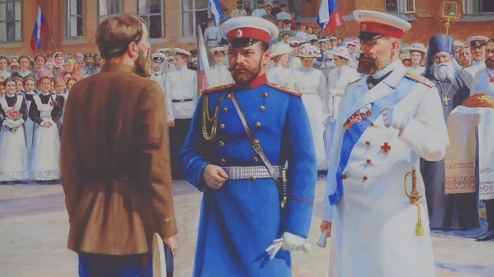
Срок службы: 8 июля 1906 — 18 сентября 1911 (до смерти), одновременно сохранял пост министра внутренних дел.
Назначение: назначен в тот же день, что и роспуска I Государственной думы, сменил И. Л. Горемыкина.
Ключевые задачи: стабилизация страны после революции 1905–1907 годов, взаимодействие с Думой (настроена оппозиционно), восстановление авторитета центральной власти на местах, остановить волну политических убийств и вооружённых нападений, организованных радикальными группами.
Политические меры: роспуск II Государственной думы (оказалась оппозиционной),«Третьеиюньский переворот» (см. Раздел "Аграрная реформа"), усиление влияния землевладельцев и состоятельных слоёв, усиление контроля центра над регионами (через губернатора и полицию).
Проведение аграрной реформы: развитие сельского хозяйства, переселение крестьян в Сибирь и на Дальний Восток, поддержка кооперации и аграрной инфраструктуры, создание Крестьянского поземельного банка.
Стабилизация и порядок: усиление полиции, применение военно-полевых судов (1906–1907), снижение революционного террора к 1907 году.
Итоги: укрепление государственного управления, экономический рост 1908–1913 годов, развитие промышленности и сельского хозяйства, формирование слоя частных крестьянских собственников.
Личная жизнь
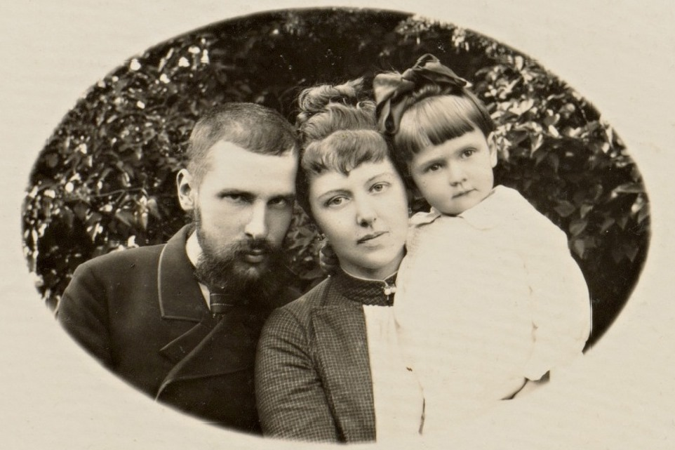
Дети:Был женат на Ольге Борисовне Нейдгардт, правнучке А. Суворова.
Дети: У пары родились дочери Мария, Наталья, Елена, Ольга и Александра и сын Аркадий.
Воспоминания: Дочь Мария оставила ценные воспоминания о своем отце и его деятельности.
Интересный факт: Изначально Ольга Борисовна была помолвлена со старшим братом Петра - Михаилом, последний был ранен на дуэли и на смертном одре благословил Ольгу и Петра на брак.
Гибель
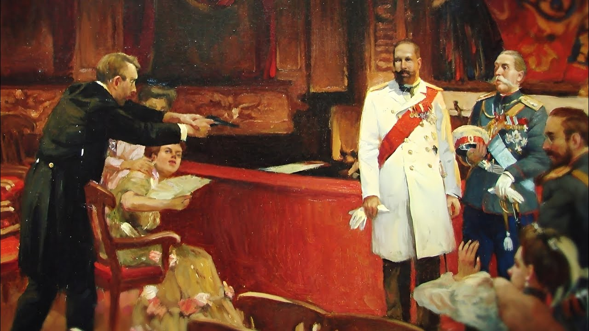
Дата: 1 (14) сентября 1911 года.
Место: Киевский городской театр, во время спектакля в присутствии императора Николая II и его свиты.
Обстоятельства: во время антракта к Столыпину подошёл Дмитрий Богров (агент охранного отделения, монархист) и выстрелил в него из пистолета.
Ранение: После ранения Столыпин перекрестил императора, тяжело опустился в кресло и произнёс: «Счастлив умереть за царя».Был доставлен в больницу в Киеве.
Смерть: скончался 5 (18) сентября 1911 года от последствий ранения.
Похороны: похоронен в Киево-Печерской лавре.
Преемник: После Петра Аркадьевича пост председателя Совета министров занял Владимир Николаевич Коковцов.
Итог: Россия потеряла одного из самых влиятельных реформаторов. Реформы остались незавершенными. Это событие усилило политическое напряжение в стране и , по мнению некоторых историков, приблизило революционные события.
Причины аграрной реформы
📈 Экономические +
👥 Социальные +
⚖ Политические +
📜 Правовые +
🗺 Геополитические +
🏛 Стратегические +
Ход аграрной реформы П.А. Столыпина
Последовательное проведение преобразований в деревне (1902–1911 гг.)
Начало подготовки реформ
В январе 1902 года было создано «Особое совещание о нуждах сельскохозяйственной промышленности» под председательством С. Ю. Витте.
Целью стало изучение кризиса деревни и поиск путей модернизации сельского хозяйства.
Именно здесь началась разработка будущей аграрной реформы.
Отмена круговой поруки
В марте 1903 года был издан указ об отмене круговой поруки.
Теперь крестьяне переставали коллективно отвечать друг за друга по налогам и повинностям.
Это ослабляло власть общины и усиливало личную ответственность крестьянина.
Ослабление сословных ограничений
11 августа 1904 года отменены телесные наказания по решениям волостных судов.
Также Крестьянскому банку разрешили активнее выдавать ссуды под наделы.
Государство постепенно готовило крестьянина к самостоятельному хозяйству.
Революция ускорила реформу
Во время революции 1905–1907 годов крестьяне громили помещичьи усадьбы, захватывали землю и требовали перемен.
Власть поняла: без решения аграрного вопроса страну стабилизировать невозможно.
Основная концепция реформы
Столыпин предлагал:
• переход к частному землевладению • разрушение крестьянской общины • создание хуторов и отрубов • формирование слоя зажиточных хозяев
Лозунг — «Ставка сделана не на убогих и пьяных, а на крепких и сильных».
⚖ Военно-полевые суды
19 августа 1906 года были введены военно-полевые суды для борьбы с революционным террором и вооружёнными выступлениями.
Суды действовали в ускоренном порядке: дело рассматривалось без длительного следствия и адвокатской защиты, а приговор приводился в исполнение в течение 24 часов.
Главной целью было быстрое подавление революционного насилия после событий Первой русской революции 1905–1907 гг..
За жёсткость репрессий в обществе появилось выражение «столыпинский галстук» — так в народе называли виселицу.
Военно-полевые суды действовали до 1907 года и стали одним из самых спорных инструментов политики Столыпина.
Указ «О дополнении некоторых постановлений действующего закона, касающихся крестьянского землевладения и землепользования»
Каждый крестьянин получил право выйти из общины и закрепить землю в личную собственность.
Это был главный удар по общинному строю.
Теперь земля могла стать частной собственностью.
Переселенческая политика
Крестьянам разрешили свободно переселяться в Сибирь, Среднюю Азию и на Дальний Восток.
Государство предоставляло землю, льготы, транспорт и помощь.
Цель — уменьшить перенаселение центральных губерний.
Выступление во II Государственной думе
6 марта Столыпин представил программу реформ.
10 мая он заявил о выборе между крестьянином-бездельником и крестьянином-хозяином.
Правительство открыто сделало ставку на частника.
🏛 Третьеиюньский переворот
Николай II распустил II Государственную думу и одновременно изменил избирательный закон без одобрения самой Думы.
Это нарушало Основные государственные законы Российской империи, поэтому событие получило название «третьеиюньский государственный переворот».
Новый избирательный закон резко усиливал позиции дворян, помещиков и крупной буржуазии, одновременно сокращая представительство крестьян, рабочих и национальных окраин.
После переворота начался период политической стабилизации — так называемая «третьеиюньская монархия».
Столыпин поддержал роспуск Думы, считая это необходимым условием для проведения реформ и борьбы с революцией.
Практическое проведение реформы
Тысячи крестьянских дворов начали выходить из общины.
Создавались хутора — отдельные хозяйства на собственной земле.
Расширялась работа землеустроительных комиссий.
Закон о земле
«Об изменении и дополнении некоторых постановлений о крестьянском землевладении»
Указ 1906 года был окончательно утверждён как закон.
Общины начали распускаться даже без согласия самих крестьян.
Реформа приобрела обязательный характер.
Смерть Столыпина
После гибели П. А. Столыпина в 1911 году реализацию аграрной реформы продолжил его ближайший соратник — Александр Васильевич Кривошеин, занимавший пост главноуправляющего землеустройством и земледелием (фактически министр сельского хозяйства).
Итоги аграрной реформы
Результаты преобразований П.А. Столыпина: успехи, достижения и причины незавершённости.
🌾 Разрушение общины
крестьянских дворов вышли из общины
- Около 2–3 млн хозяйств закрепили землю в частную собственность
- Появились хутора и отруба
📈 Экономический рост
вырос сбор зерна
- Россия заняла 1-е место в мире по экспорту хлеба
- 25% мирового рынка зерна
- Посевные площади выросли на 10%
🚂 Переселение в Сибирь
человек переселились за Урал
- Освоено около 30 млн десятин земли
- Сибирь стала экспортёром зерна и масла
👨🌾 Социальные изменения
дворов вошли в кооперацию
- Сформировался слой сельских предпринимателей
- Появились крепкие хозяйства
⚠ Почему реформа не была завершена?
Переселенческая политика
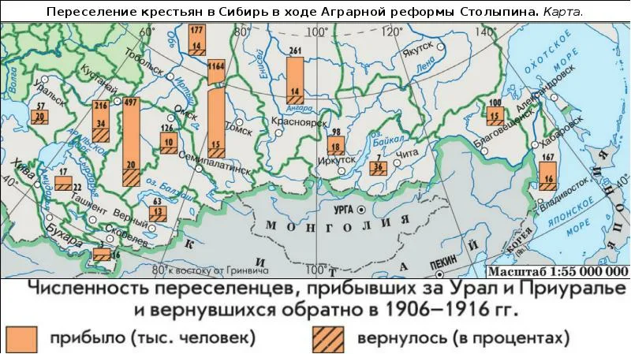
🏠 Причина
Перенаселение центральных губерний и нехватка земли.
🌲 Направления
Сибирь, Средняя Азия, Дальний Восток.
🚂 Поддержка
Льготный проезд, выдача земли, помощь переселенцам.
⚠ Трудности
Суровый климат, плохой быт, часть крестьян вернулась назад.
Ключевые понятия реформы
Основные термины аграрной реформы П.А. Столыпина
🌾 Отруб +
Единый участок земли, выделенный крестьянину в частную собственность взамен множества разбросанных полос (чересполосицы), при этом жилой дом и двор крестьянина оставались в самой деревне.
🏡 Хутор +
Обособленный участок земли, выделенный крестьянину в частную собственность, на который он переносил свой жилой дом (усадьбу) и все хозяйственные постройки, окончательно разрывая связь с деревней.
🧩 Чересполосица +
Старая общинная система, при которой надел одного крестьянина состоял из множества узких полос, разбросанных по разным полям деревни. Реформа Столыпина стремилась её уничтожить.
🏦 Крестьянский поземельный банк +
Государственный банк, который выкупал помещичьи земли и перепродавал их крестьянам в кредит на льготных условиях (под низкий процент и на срок до 55 лет).
🤝 Кооперативное движение +
Добровольные объединения крестьян (маслодельные, кредитные, потребительские союзы) для совместного сбыта продукции и закупки техники.
🚂 Переселенческая политика +
Организованное правительством перемещение малоземельных крестьян из центра России на свободные земли в Сибирь, на Дальний Восток и в Среднюю Азию.
🚃 Столыпинский вагон +
Специально оборудованный товарный вагон для перевозки крестьян-переселенцев, их семей, скота и инвентаря в Сибирь.
⚖ Военно-полевые суды +
Чрезвычайные суды, введённые в 1906 году для ускоренного рассмотрения дел о революционном терроре и вооружённых выступлениях. Приговоры выносились быстро и часто заканчивались смертной казнью.
⚖ Земская реформа +
Была направлена на модернизацию системы местного самоуправления, усиление влияния зажиточных крестьян и укрепление русского влияния в западных губерниях.
📜 Основные положения проекта 1906 года:
⚖ Отказ от сословного принципа выборности.
Вместо сословных курий вводился имущественный ценз, что должно было усилить влияние зажиточных крестьян.
🏛 Создание волостного всесословного земства.
Это должно было стать основой самоуправления на низовом уровне.
🇷🇺 Укрепление русского влияния в западных губерниях.
Планировалось распространить земства в тех губерниях, где был силён русский элемент.
🗺 Проект для западных губерний (1909 год)
В 1909 году был внесён законопроект о введении земств в Витебской, Минской, Могилёвской, Волынской, Киевской и Подольской губерниях, где преобладало украинское и белорусское население, а помещики в основном были поляками и католиками.
⚔ Разделение избирателей на две курии — польскую и русскую, при этом русская курия должна была избирать в два раза больше гласных.
💰 Снижение имущественного ценза для русских помещиков и православного духовенства.
👥 Требование национального состава.
Председатель и не менее половины членов земства должны были быть русскими.
⚠ Сопротивление и итоги
Реформа встретила сопротивление консервативной аристократии, которая опасалась потери влияния и усиления позиций зажиточных крестьян.
📅 1 июня 1914 года Государственный совет Российской империи окончательно отклонил проект «земско-волостной» реформы.
👑 Лишь 14 марта 1911 года закон о введении земств в западных губерниях был принят волевым решением Николая II.
Таким образом, несмотря на усилия Столыпина, земская реформа не была полностью реализована в задуманном масштабе.
🧑⚖ Судебная реформа +
Была направлена на создание единого правового пространства, модернизацию судебной системы и повышение доступности правосудия.
С 1 января 1914 года реформа начала действовать в 10 юго-западных губерниях,а к 1917 году распространилась уже на 20 губерний Российской империи.
Основные положения реформы
Планировалось ликвидировать волостные суды, суды земских начальников, городских судей и уездных членов окружного суда.
Однако волостной суд сохранился в преобразованном виде — как низовая инстанция, связанная с мировыми судьями.
Мировые судьи рассматривали гражданские и уголовные дела небольшой тяжести. Их избирали земские собрания и городские думы.
Решения могли обжаловаться в вышестоящих судебных инстанциях.
Правительство стремилось отказаться от практики вынесения решений на основе обычного права, традиций и местных преданий.
Суд должен был действовать по единым законам империи.
Для мировых судей вводились образовательный, имущественный, служебный и нравственный цензы.
Мировые съезды становились апелляционной инстанцией для мировых судей.
Они состояли из мировых судей округа под председательством лица, назначаемого правительством.
Результаты реформы
⚠Суд стал более доступным и менее затратным для населения.
⚠Судопроизводство избавилось от части нелогичных решений и правовых противоречий.
⚠Появились возможности для выравнивания прав граждан империи.
Сопротивление реформе
Реформа сталкивалась с критикой со стороны консерваторов и правых политических сил, которые считали её слишком либеральной.
Также возникали разногласия между Государственной думой и Государственным советом, из-за чего создавались согласительные комиссии.
Несмотря на масштабность преобразований, судебная реформа не была полностью завершена из-за политических противоречий, Первой мировой войны и революции 1917 года.
🎖 Военная реформа +
Была направлена на модернизацию армии и флота после поражения в русско-японской войне и революционных событий 1905–1907 годов.
Причины реформы
Русско-японская война показала серьёзные проблемы в вооружении, подготовке армии и системе военного управления.
Россия также отставала от ведущих мировых держав в развитии техники, связи и организации войск.
Основные направления реформы
Повышалась скорострельность оружия, развивалась тяжёлая артиллерия, создавались бронемашины и современные средства связи: телефон, телеграф и радио.
Началось формирование авиационных, химических и автобронетанковых частей. Развивалось воздухоплавание — аэропланы и дирижабли.
Сохранялась всеобщая воинская обязанность, но сроки службы сокращались: до 3 лет в пехоте и до 4 лет в других родах войск.
Открывались специальные электротехнические, автомобильные, железнодорожные и воздухоплавательные школы, а также школы прапорщиков.
Проводилась модернизация флота, строились стратегические железные дороги, включая второй путь Сибирской магистрали и Амурскую железную дорогу.
Был разработан новый устав, регулировавший порядок призыва, систему льгот и права призывных комиссий.
Итоги реформы
Повысилась боеготовность армии, улучшилось техническое оснащение, развивались авиация и бронетехника.
Улучшилась подготовка офицеров, расширилась сеть военных учебных заведений, а армия стала более мобильной благодаря развитию железных дорог.
Проблемы и ограничения
Нехватка финансирования и социальные противоречия в армии замедляли модернизацию вооружённых сил.
Военная реформа Столыпина стала важным шагом в модернизации российской армии, однако полностью завершить преобразования до начала мировой войны не удалось.
🚓 Полицейская реформа +
Была направлена на укрепление системы правопорядка после революционных событий 1905–1907 годов и роста террористической активности.
Причины реформы
Революция 1905 года показала слабость и разобщённость полицейской системы Российской империи.
Полиция была перегружена административными обязанностями, страдала от нехватки финансирования и недостаточной подготовки кадров.
Основные направления реформы
В 1906 году была создана специальная комиссия для подготовки проектов преобразования полиции и улучшения её работы.
Планировалось снять с полиции функции, не связанные напрямую с охраной порядка: сбор податей, статистические работы и административные поручения.
Предполагалось почти втрое увеличить жалование полицейским и улучшить условия службы, чтобы привлечь более квалифицированные кадры.
Создавались специальные курсы и учебные заведения для подготовки полицейских.
В Царском Селе обучали сотрудников охранки методам политического сыска.
В 1908 году был принят закон «Об организации сыскной части».
В крупнейших городах империи создавались отделения сыскной полиции для борьбы с уголовной преступностью.
Создавались районные охранные отделения, контролировавшие несколько губерний, а также проводились съезды начальников охранных отделений для обмена опытом.
Проблемы реформы
Реформа сталкивалась с сопротивлением бюрократии, нехваткой финансирования и сложностью объединения различных полицейских структур.
После гибели Столыпина в 1911 году многие проекты были заморожены.
Итоги
Удалось усилить сыскную полицию, улучшить подготовку кадров и частично повысить эффективность борьбы с преступностью.
Однако создать единую и полностью модернизированную систему полиции до 1917 года так и не удалось.
Полицейская реформа Столыпина стала попыткой модернизировать систему охраны правопорядка, но её реализация оказалась неполной из-за политических и финансовых трудностей.
🎓 Реформа образования +
Цели реформы
- сделать образование доступным для всех слоёв населения;
- повысить качество обучения;
- подготовить специалистов для промышленности и сельского хозяйства;
- распространить грамотность и культуру;
- укрепить единство империи через образование.
Всеобщее начальное обучение
📅 3 мая 1908 года был утверждён план школьной реформы, предусматривавший введение 4-летнего бесплатного обучения для детей 8–12 лет.
Был подготовлен законопроект «О введении всеобщего начального обучения в Российской империи».
Расширение сети школ
🏫 В 1908–1914 годах было открыто 50 000 новых школ.
Развивались профессиональные училища, ремесленные и сельскохозяйственные школы, а гимназии должны были стать основой единой системы образования.
Подготовка учителей
Открывались специальные педагогические курсы, создавались новые учительские институты, в том числе институт в Ярославле.
Проводилась переподготовка преподавателей, повышалось жалованье и улучшались условия службы.
Высшее образование и наука
Новый Университетский устав расширял автономию вузов: университеты получали право выбирать ректора и усиливать роль Совета университета.
Поддерживались негосударственные вузы, научные исследования, музеи, экспедиции и культурные проекты.
Финансирование
💰 Расходы государства на народное образование выросли почти в 4 раза — с 9 млн до 35,5 млн рублей в 1908–1914 годах.
Итоги реформы
- значительно выросла грамотность населения;
- расширилась сеть школ и училищ;
- улучшилась подготовка педагогов;
- развивалось профессиональное образование;
- укреплялась автономия университетов и поддержка науки.
Несмотря на успехи, реформа не была завершена: её прервали гибель Столыпина и начало Первой мировой войны.
⚒ Трудовые отношения +
Была направлена на снижение социальной напряжённости, улучшение условий труда и защиту рабочих после революционных событий 1905–1907 годов.
Причины реформы
- тяжёлые условия труда на фабриках и заводах;
- отсутствие страхования и правовой защиты рабочих;
- длинный рабочий день и низкая заработная плата;
- рост забастовок и социальных конфликтов.
Защита рабочих
Был запрещён ночной труд женщин и подростков на ряде производств, а также их работа под землёй.
Для несовершеннолетних сокращался рабочий день, а работодатели были обязаны отпускать подростков на учёбу.
Страхование рабочих
Проекты 1908 года предусматривали:
- страхование от несчастных случаев;
- страхование по болезни;
- создание больничных касс;
- выплаты семьям погибших рабочих.
Трудовые конфликты
Планировалось создание специальных промышленных судов и комиссий для урегулирования споров между рабочими и предпринимателями.
Также ограничивались размеры штрафов, налагаемых работодателями на рабочих.
Законы 1912 года
⚖ В 1912 году был принят закон о страховании рабочих, хотя и в значительно сокращённом виде.
- создавались больничные кассы;
- сокращался рабочий день до 10 часов;
- разрешались экономические забастовки;
- допускалось создание профессиональных организаций под государственным контролем.
Проблемы реформы
Реформа встретила сопротивление предпринимателей и консервативных кругов власти, опасавшихся роста расходов и усиления рабочего движения.
Многие законопроекты были ослаблены, а часть инициатив так и не была реализована полностью.
Итоги
- в России появилась система страхования рабочих;
- улучшились условия труда женщин и подростков;
- были легализованы профсоюзы;
- созданы механизмы разрешения трудовых споров.
Несмотря на важные изменения, социальная напряжённость полностью снята не была, а многие проблемы рабочих сохранились.
🌍 Национальный вопрос +
Главные цели
- укрепление единства государства;
- борьба с сепаратизмом;
- интеграция национальных окраин в общеимперское пространство;
- развитие образования и самоуправления в регионах;
- формирование лояльности к центральной власти.
Министерство национальностей
Столыпин предлагал создать специальное Министерство национальностей, которое должно было изучать культуру, традиции и особенности народов империи.
Предполагалось, что все народы будут иметь равные права и обязанности, оставаясь верными России.
Политика в отношении евреев
Обсуждалось смягчение ограничений черты оседлости, а также расширение прав евреев в сфере образования и профессий.
Однако серьёзные изменения не были реализованы из-за сопротивления консерваторов.
Западные губернии
В западных губерниях проводилась земская реформа 1911 года, усиливавшая позиции русского населения.
- снижался имущественный ценз для русских землевладельцев;
- председатель и часть земства должны были быть русскими;
- создавались польская и русская избирательные курии.
Политика в Финляндии и Польше
Правительство ограничивало автономию Финляндии, передавая часть полномочий центральной власти.
В 1912 году была образована Холмская губерния, выведенная из состава Царства Польского.
«Столыпинский циркуляр»
📅 20 января 1910 года был издан циркуляр, запрещавший национальные организации, которые могли поддерживать сепаратизм или угрожать общественному порядку.
Образование и культура
В национальных регионах расширялась сеть русских школ, поощрялось изучение русского языка и вовлечение местных элит в систему государственного управления.
Итоги политики
- усилился контроль над окраинами империи;
- частично укрепилось влияние центральной власти;
- развивались образование и инфраструктура регионов;
- однако национальные противоречия полностью устранить не удалось.
Политика Столыпина пыталась сочетать централизацию государства и сохранение многонационального характера империи, но многие проблемы остались нерешёнными.
⛪ Вероисповедная политика +
Реформы были направлены на расширение религиозной свободы, смягчение ограничений для конфессий и укрепление единства государства при сохранении ведущей роли православия.
Основные меры
Расширение прав старообрядцев.
Старообрядцы получили больше гражданских прав, были отменены многие ограничения на государственную службу.
Свобода перехода между вероисповеданиями.
Переход из православия в другое христианское исповедание перестал влечь гражданские ограничения и наказания.
Поддержка религиозных общин.
Расширялись права католических, мусульманских и иных религиозных организаций.
Указ 1906 года.
Был принят указ о порядке деятельности старообрядческих и сектантских общин, направленный на повышение их лояльности к государству.
Ограничение произвола чиновников.
Циркуляр 1910 года запрещал местным властям самостоятельно вводить ограничения в религиозной сфере без согласования с МВД.
Позиция Столыпина
Столыпин выступал за расширение религиозной свободы, однако считал, что государство должно сохранять контроль над политическими и гражданскими последствиями вероисповедных вопросов.
При этом подчёркивалась особая роль Русской православной церкви как основы государственной системы.
Проблемы и сопротивление
Реформы встретили сопротивление консервативных кругов, опасавшихся ослабления позиций православия и усиления либеральных настроений.
Многие законопроекты так и не были окончательно приняты Государственным советом и Думой.
После смерти Столыпина в 1911 году политика правительства стала менее либеральной, а часть инициатив была свёрнута.
Несмотря на ограниченные результаты, реформы Столыпина стали важным шагом к расширению вероисповедной свободы в Российской империи.
Эпоха реформ
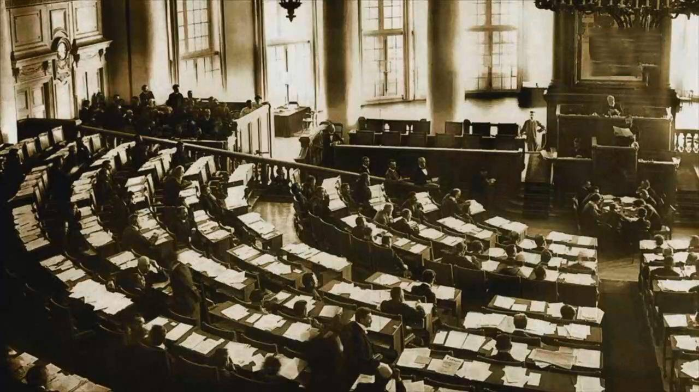
I Государственная дума
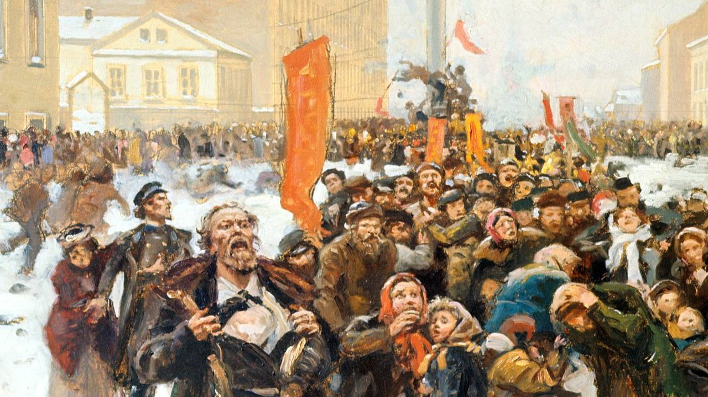
Революция 1905 года
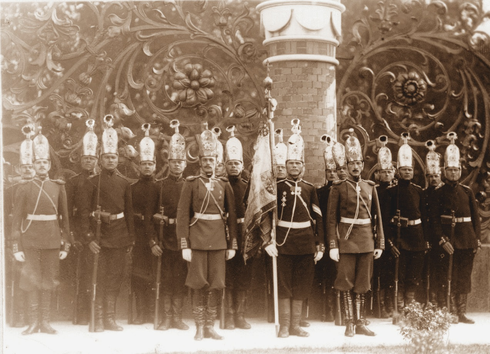
Модернизация армии
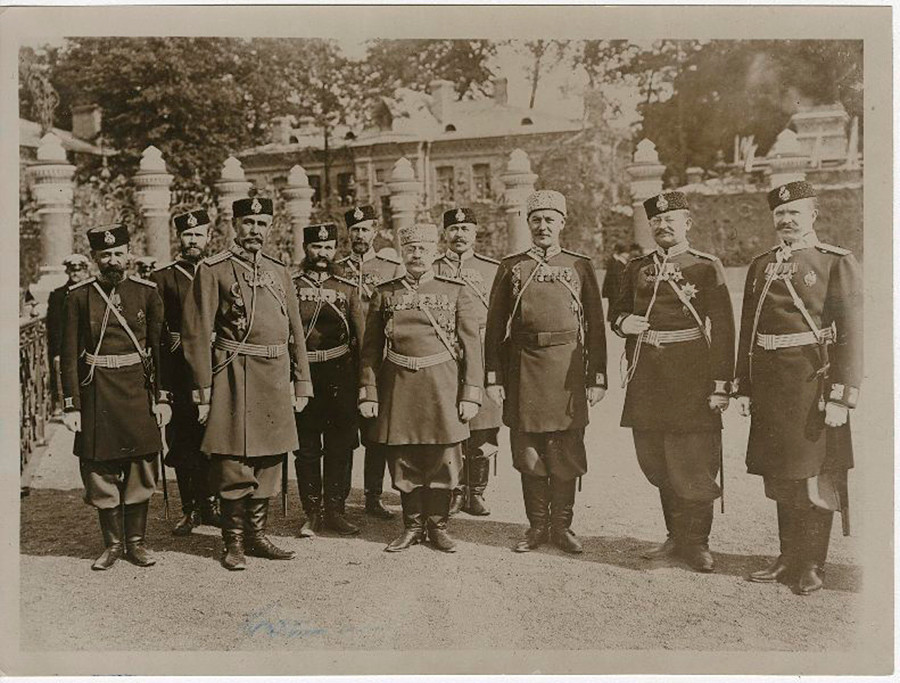
Сыскная полиция
Почему реформы не были завершены?
Убийство Столыпина
После гибели Столыпина в 1911 году реформы потеряли главного инициатора.
Первая мировая война
С 1914 года ресурсы страны были направлены на войну, а реформы остановились.
Сопротивление элит
Многие проекты блокировались Государственным советом и консерваторами.
Социальная напряжённость
Общество оставалось расколотым, а революционные настроения сохранялись.
«Вам нужны великие потрясения — нам нужна Великая Россия»
Ловушки ЕГЭ
Задание 1
Укажите мероприятие, относящееся к аграрной реформе П.А. Столыпина:
Задание 2
Какие три из перечисленных реформ были осуществлены в царствование Николая II? Соответствующие цифры запишите в ответ.
1. Реформа управления государственными крестьянами П.Д. Киселёва
2. Аграрная реформа П.А. Столыпина
3. Денежная реформа Е.Ф. Канкрина
4. Учреждение Государственной думы
5. Денежная реформа С.Ю. Витте
6. Создание Высшего совета народного хозяйства
Ваш ответ (три цифры через запятую или пробел):
Задание 3
Что из перечисленного предусматривала столыпинская аграрная реформа?
1. Конфискацию помещичьих земель
2. Укрепление крестьянской общины
3. Отказ от переселенческой политики
4. Создание широкого слоя мелких земельных собственников
Введите номер правильного ответа:
Задание 4
В каком из перечисленных рядов названы имена современников?
Задание 5
Прочтите отрывок из сочинения историка и укажите фамилию государственного деятеля, который был инициатором реформы, о которой говорится в отрывке.
Задание 6
Аграрная реформа П.А. Столыпина предполагала
Задание 7
Расположите в хронологической последовательности исторические события.
А. начало аграрной реформы П.А. Столыпина
Б. Первая русская революция
В. убийство П.А. Столыпина
Введите правильную последовательность букв (например: АБВ):
Задание 8
Расположите в хронологической последовательности исторические события.
1. начало деятельности I Государственной думы
2. начало аграрной реформы П.А. Столыпина
3. Третьеиюньский переворот
Введите правильную последовательность цифр:
Задание 9
Установите соответствие между процессами (явлениями, событиями) и фактами, относящимися к этим процессам (явлениям, событиям):
ПРОЦЕСС
А) проведение аграрной реформы П.А. Столыпина
Б) переселенческая политика начала XX века
В) борьба правительства с революционным движением после революции 1905–1907 гг.
Г) развитие представительной системы в Российской империи начала XX века
ФАКТ
1) создание военно-полевых судов
2) массовое переселение крестьян в Сибирь и на Дальний Восток
3) издание указа о праве выхода крестьян из общины
4) созыв Государственной думы
5) введение золотого стандарта рубля
6) отмена подушной подати
Введите ответ в формате: А6 Б4 В1 Г3
Задание 10
Установите соответствие между датами и событиями (реформами) эпохи П.А. Столыпина:
ДАТЫ
А) 1906 г.
Б) 1907 г.
В) 1910 г.
Г) 1911 г.
СОБЫТИЯ (РЕФОРМЫ)
1) убийство П.А. Столыпина в Киеве
2) начало деятельности III Государственной думы
3) указ о праве свободного выхода крестьян из общины
4) закон о закреплении разрушения крестьянской общины
5) введение золотого стандарта рубля
6) создание Крестьянского поземельного банка
Введите ответ в формате: А3 Б2 В4 Г1
Задание 11
Ниже приведён перечень терминов. Все они, за исключением одного, относятся к реформам П.А. Столыпина.
1. хутор
2. отруб
3. переселенческая политика
4. военно-полевые суды
5. продразвёрстка
6. разрушение крестьянской общины
Введите номер термина, который относится к другой исторической эпохе:
Задание 12
Запишите термин в поле:
«Единый участок земли, выделенный крестьянину в частную собственность взамен множества разбросанных полос (чересполосицы), при этом жилой дом и двор крестьянина оставались в самой деревне»
Ваш ответ:
Задание 13
Выберите цели аграрной реформы П.А. Столыпина.
1. создание слоя крестьян-собственников, способных вести эффективное товарное хозяйство
2. сохранение крестьянской общины как основы сельского устройства России
3. повышение товарности и конкурентоспособности сельского хозяйства Российской империи
4. ликвидация частной собственности на землю и передача её государству
5. снижение социальной напряжённости в деревне и предотвращение новых революционных выступлений
6. уравнительное распределение земли между всеми крестьянами независимо от их хозяйственных успехов
7. стимулирование выхода крестьян из общины и закрепление земли в частную собственность
Введите номера правильных ответов (в порядке возрастания, через запятую или пробел):
Задание 14
Выберите последствия аграрной реформы П.А. Столыпина.
1. усиление социального расслоения крестьянства: выделение слоя зажиточных крестьян (кулаков), ведущих товарное хозяйство, и увеличение числа малоземельных и бедных крестьян
2. полная ликвидация крестьянской общины на всей территории Российской империи уже к 1910 г.
3. рост числа индивидуальных крестьянских хозяйств (хуторов и отрубов), ориентированных на рынок и применение наёмного труда
4. массовое уничтожение помещичьего землевладения и передача всей земли крестьянам
5. активное переселение значительной части крестьян в малозаселённые районы Сибири, Казахстана и Дальнего Востока
6. резкое сокращение производства сельскохозяйственной продукции и падение экспорта зерна
7. увеличение товарности сельского хозяйства и рост экспорта зерна за границу
8. полное запрещение выхода крестьян из общины после 1911 г.
9. формирование устойчивой прослойки зажиточных крестьян, заинтересованных в сохранении частной собственности на землю
Введите номера правильных ответов (в порядке возрастания, через запятую или пробел):
Задание 15
Выберите цели реформ П.А. Столыпина в сфере образования.
1. повышение грамотности населения Российской империи
2. подготовка квалифицированных специалистов для экономики страны
3. полная ликвидация университетов
4. введение всеобщего начального образования
5. сокращение числа учебных заведений
Введите номера правильных ответов (в порядке возрастания, через запятую или пробел):
Задание 16
Выберите мероприятия, относящиеся к реформам и преобразовательным проектам П.А. Столыпина.
1. распространение земского самоуправления на западные губернии Российской империи
2. расширение сети начальных школ и подготовка проекта всеобщего начального образования
3. создание военно-полевых судов для ускоренного рассмотрения дел о терроризме
4. введение восьмичасового рабочего дня
5. разработка мер по страхованию рабочих от несчастных случаев и болезней
6. создание Советов рабочих депутатов
7. реформирование полиции и усиление системы охраны общественного порядка
8. проект преобразований армии после опыта русско-японской войны
9. отмена частной собственности на землю
Введите номера правильных ответов (в порядке возрастания, через запятую или пробел):
Задание 17 (по карте)
На карте показаны основные направления переселенческой политики П.А. Столыпина (1906–1914). Проанализируйте карту и выполните задания.
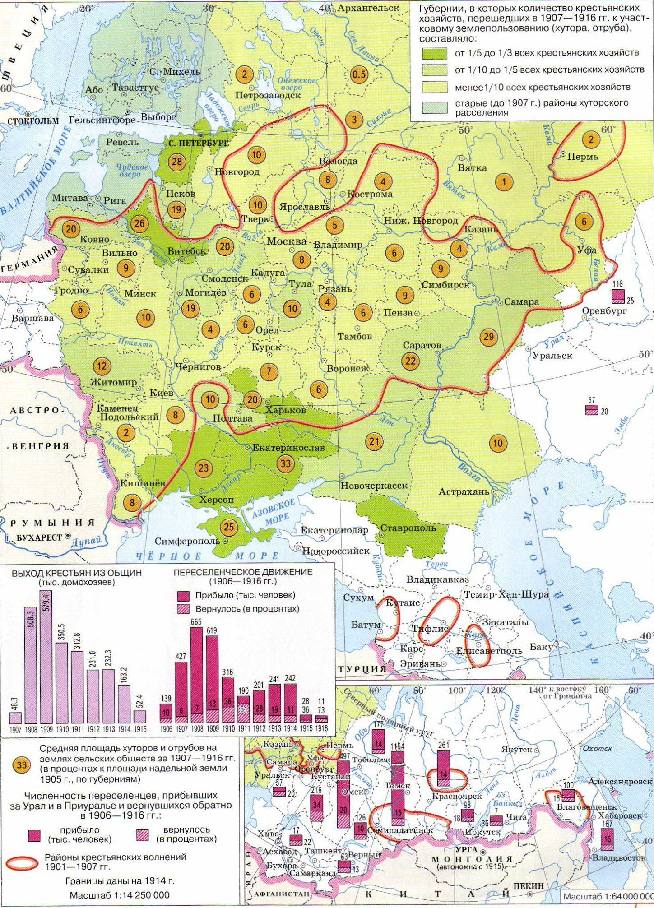
📌 Кликните на карту, чтобы увеличить
1. Какие три основных региона были главными направлениями переселенческой политики?
А) Сибирь
Б) Кавказ
В) Дальний Восток
Г) Крым
Д) Средняя Азия (Казахстан)
2. Какое событие НЕ связано с переселенческой политикой Столыпина?
А) предоставление переселенцам земельных наделов
Б) льготный проезд по железной дороге
В) создание «столыпинских вагонов»
Г) принудительное выселение крестьян в Сибирь
3. Укажите две основные причины, по которым часть переселенцев возвращалась обратно в Европейскую Россию:
_________________________________
_________________________________
Ответ на задание 1 (введите буквы через запятую или пробел):
Ответ на задание 2 (введите букву):
Ответ на задание 3 (две причины):